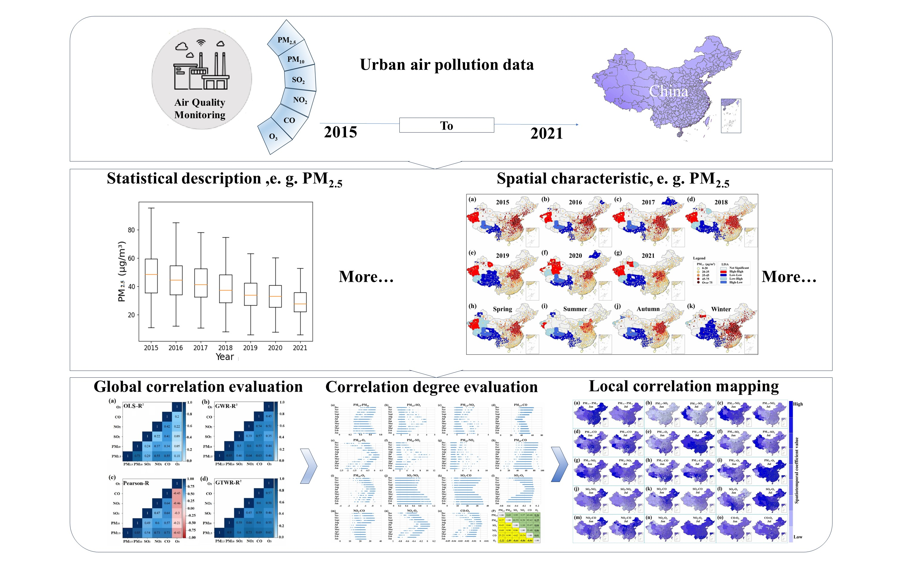
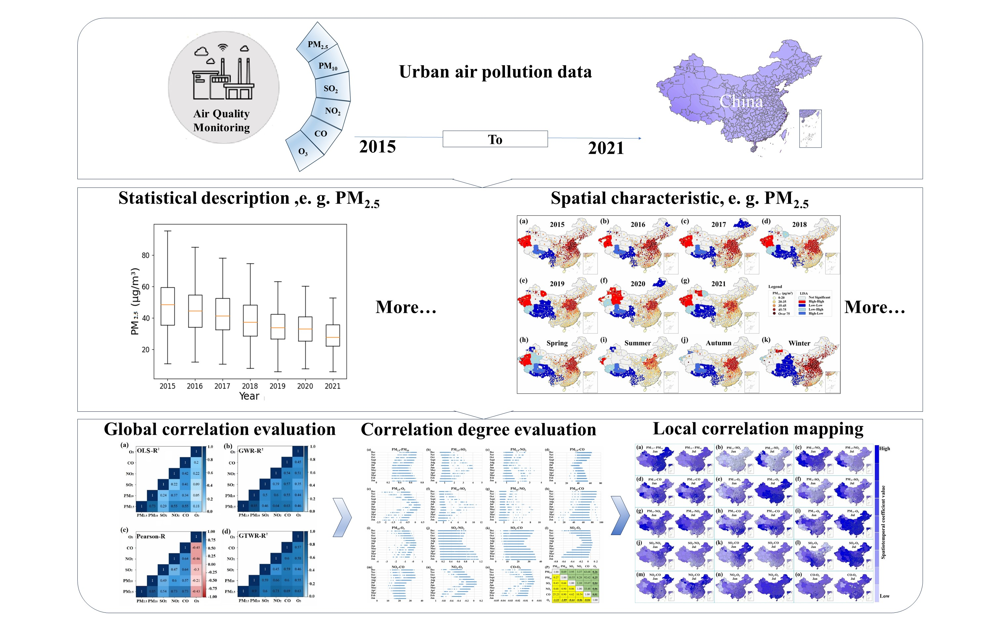

I am a master's student in Civil Engineering, specializing in Geographic Information Systems, with an
undergraduate background in Computer Science. I have gained experience through two years of software studies and
three years of software development work in the industry, as well as academic research during my graduate studies.
• Scientific Research: Published paper on spatial-temporal analysis and environmental data in peer-reviewed
journal.
• Programming: Proficient in multiple languages with academic and enterprise project experience.
• Collaboration: 3 years of corporate work, familiar with SDLC and team collaboration.
• Additional Skills: Expert in batch processing of meteorological, environmental, and remote sensing data, as well as statistical method, ML and DL model implementation. 
• Programming: Proficient in multiple languages with academic and enterprise project experience.
• Collaboration: 3 years of corporate work, familiar with SDLC and team collaboration.
• Additional Skills: Expert in batch processing of meteorological, environmental, and remote sensing data, as well as statistical method, ML and DL model implementation. 
Educational Background
- Sep. 2021 - Jun. 2024 , attended Jiangsu Ocean University, majoring in Geographic Information Science, with a GPA of 3.2/4, and obtained a Master of Science degree (M.Se.).
- Sep. 2015 - Jun. 2017 , attended Huaiyin Normal University, majoring in Computer Science, with a GPA of 3.6/4, and obtained a Bachelor of Science degree (B.Se.).
- Sep. 2012 - Jun. 2015 , attended Changzhou College of Information Technology, majoring in Software Engineering, with a GPA of 2.8/4, and obtained an Associate Degree.
Professional Experience
- Jan. 2021 - Feb. 2021 , BY Technology INC., Software Engineer, starting salary 35,000 RMB per month.
- Jun. 2018 - Dec. 2020 , Twinle Ray Software Development Corp., Project Leader, starting salary 18,000 RMB per month.
- Jun. 2017 - May 2018 , Shanghai Three High Computer Center Co., Ltd, Junior Software Developer, starting salary 5,000 RMB per month.
- • Yang, Xuchu, Yi Yang, Shenghua Xu, Hamed Karimian, Yangyang Zhao, Lingbo Jin, Yanchang Xu, and Yanli Qi. "Unveiling the air pollution tapestry in China: A comprehensive assessment of spatiotemporal variations through geographically and temporally weighted regression." Atmospheric Pollution Research 15, no. 2 (2024): 101987. (2023), (Q2, IF:4.5).
Research Experience
- 2023-2024 ,China air pollutant analysis based on Geographically and Temporally Weighted Regression
- 2021- 2022 , Research on the combination of machine learning, deep learning and GTWR
Working Experience:
- 2021-2021 , BY Technology INC., Software Engineer, starting salary 35,000 RMB per month.
- 2018-2020 , Twinle Ray Software Development Corp., Project Leader, starting salary 18,000 RMB per month.
- 2017-2018 , Shanghai Three High Computer Center Co., Ltd, Junior Software Developer, starting salary 5,000 RMB per month.
- Jiangsu Ocean University Scholarship for Master 2021-2024
- Outstanding Employee Award at BY Technology INC. (Philippines) 2020
- Huaiyin Normal University Scholarship for Bachelor 2015
-
Traveling


-
Cycling


-
Swimming
-
Playing badminton